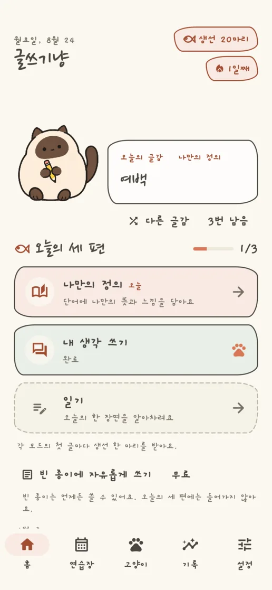
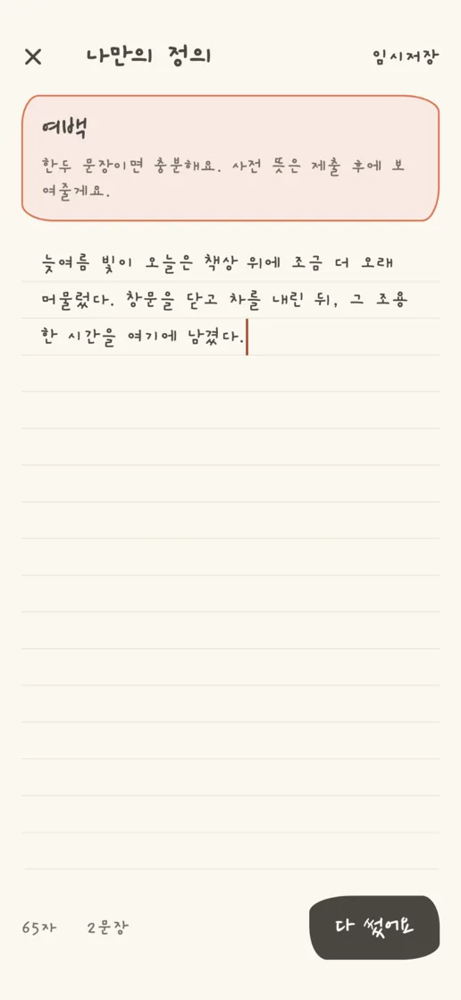
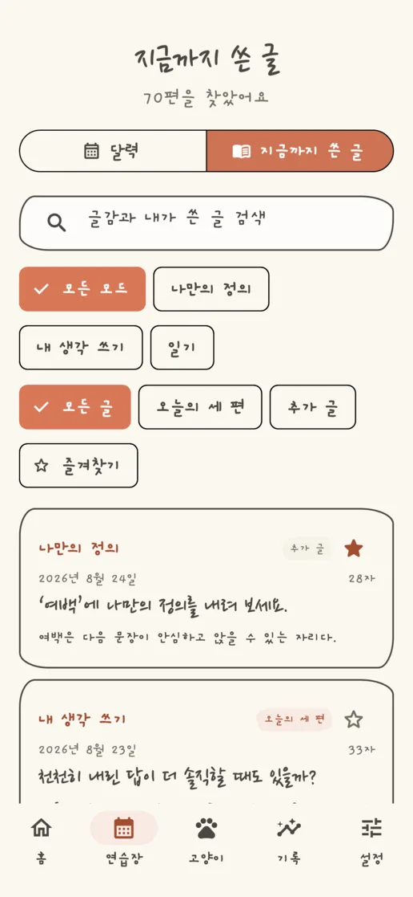
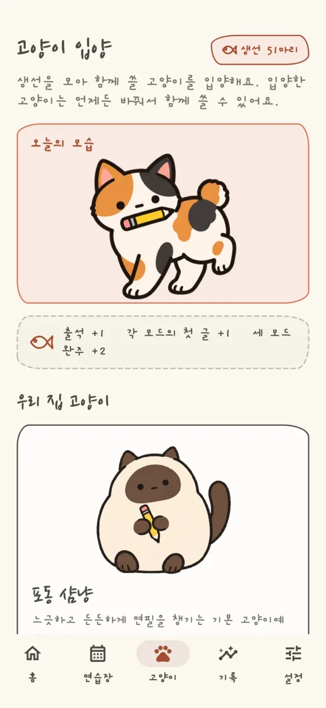
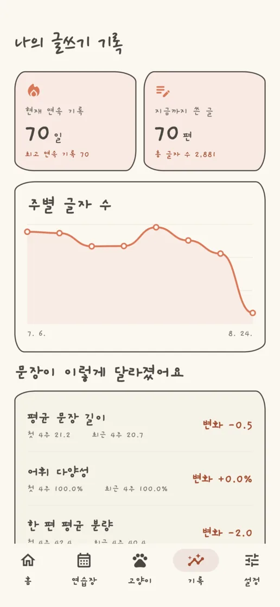
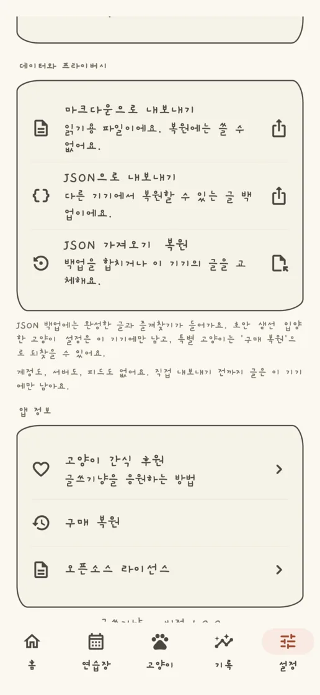

나만의 정의
하나의 단어에 나만의 정의를 내리고, 다 쓴 뒤 참고할 뜻을 확인해요.
고양이와 함께 만드는 매일 글쓰기 습관
글쓰기냥은 솔직한 한 문장부터 글쓰기 습관을 만드는, 조용하고 사적인 글쓰기 앱입니다. 단어와 질문, 오늘의 한 장면을 곁에 앉은 고양이와 함께 문장으로 남겨 보세요.
 App Store 출시 예정
App Store 출시 예정무료 · iPhone·Android · English · 日本語 · 한국어


세 가지 방식으로 시작하기
모드마다 120개씩, 모두 360개의 글감을 영어·일본어·한국어로 자연스럽게 담았어요. 마음에 맞지 않으면 다른 글감을 고르고, 빈 종이에서 시작해도 돼요.
하나의 단어에 나만의 정의를 내리고, 다 쓴 뒤 참고할 뜻을 확인해요.
질문 앞에 잠시 멈춰 지금의 생각을 내 문장으로 써요.
글감을 출발점으로 삼거나 빈 종이에서 오늘의 작은 장면을 남겨요.
앱 미리보기




계정, 서버, 소셜 피드, 분석, 추적이 없어요. 글쓰기는 완전히 오프라인으로 돼요. 마크다운과 JSON으로 내보내고, JSON에서 다시 복원할 수 있어요. 광고와 구독 없이, 특별 고양이 팩과 간식 후원으로 응원할 수 있어요.